Canto II
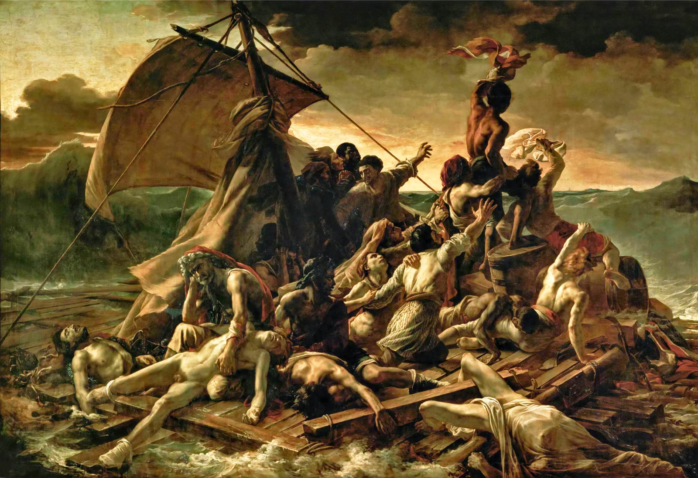
| Some selections from Canto II | ||
|---|---|---|
| Juan departs Cadiz: Inez dispatches Juan on a notional Grand Tour | The great success of Juan’s education / Spurred her to teach another generation. | V–X |
| The ship Trinidada: Pedrillo sick in his hammock; the storm breaks; the ship broached, masts cut away, pumps failing | Laid with one blast the ship on her beam ends. | XXIV–XL |
| The longboat; Pedro and Tita lost; the spaniel rescued; the cutter swamped; thirty survivors in the longboat | There’s nought no doubt so much the spirit calms / As rum and true religion. | LIV–LXIII |
| Juan swims ashore alone: glimpses Haidée’s face; Byron’s boast of swimming the Hellespont | As once (a feat on which ourselves we prided) / Leander, Mr Ekenhead, and I did. | CV–CXII |
| Lambro introduced; his house on one of the wilder Cyclades; Haidée his only daughter, greatest heiress of the Eastern Isles | A little smuggling and some piracy / Left him at last the sole of many masters / Of an ill-gotten million of piastres. | CXXIII–CXXX |
| Haidée’s sleepless night, early rising; She returns to the cave; an angel-over-the-dying simile; | And thus like to an angel o’er the dying / Who die in righteousness she leaned… | CXXXVIII–CXLVIII |
| Diversion on wine; man being reasonable must get drunk; Byron loses his way and recovers it | Let us have wine and woman, mirth and laughter, / Sermons and soda water the day after. | CLXXVII–CLXXXI |
| The evening walk and the seduction: the sunset scene; the first kiss; the beach-side union | Ocean their witness, and the cave their bed, / By their own feelings hallowed and united… | CLXXXII–CXCVII |
Oh ye who teach the ingenuous youth of nations,
Holland, France, England, Germany, or Spain,
I pray ye flog them upon all occasions;
It mends their morals, never mind the pain.
The best of mothers and of educations
In Juan's case were but employed in vain,
Since in a way that's rather of the oddest, he
Became divested of his native modesty.
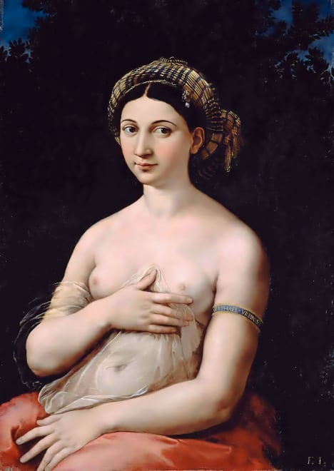
Had he but been placed at a public school,
In the third form or even in the fourth,
His daily task had kept his fancy cool -
At least had he been nurtured in the north.
Spain may prove an exception to the rule,
But then exceptions always prove its worth.
A lad of sixteen causing a divorce
Puzzled his tutors very much, of course.
I can't say that it puzzles me at all,
If all things be considered: first, there was
His lady mother, mathematical,
A—never mind; his tutor, an old ass;
A pretty woman (that's quite natural,
Or else the thing had hardly come to pass);
A husband rather old, not much in unity
With his young wife; a time and opportunity.
Well—well, the world must turn upon its axis,
And all mankind turn with it, heads or tails,
And live and die, make love and pay our taxes,
And as the veering wind shifts, shift our sails.
The king commands us, and the doctor quacks us,
The priest instructs, and so our life exhales,
A little breath, love, wine, ambition, fame,
Fighting, devotion, dust—perhaps a name.
I said that Juan had been sent to Cadiz,
A pretty town, I recollect it well.
'Tis there the mart of the colonial trade is
(Or was, before Peru learned to rebel),
And such sweet girls—I mean, such graceful ladies.
Their very walk would make your bosom swell;
I can't describe it, though so much it strike,
Nor liken it—I never saw the like.
An Arab horse, a stately stag, a barb
New broke, a cameleopard, a gazelle -
No, none of these will do. And then their garb,
Their veil and petticoat! Alas, to dwell
Upon such things would very near absorb
A canto. Then their feet and ankles—well,
Thank heaven I've got no metaphor quite ready
(And so, my sober Muse, come, let's be steady,
Chaste Muse—well, if you must, you must)—the veil
Thrown back a moment with the glancing hand,
While the o'erpowering eye that turns you pale
Flashes into the heart. All sunny land
Of love, when I forget you, may I fail
To — say my prayers; but never was there planned
A dress through which the eyes give such a volley,
Excepting the Venetian fazzioli.
But to our tale. The Donna Inez sent
Her son to Cadiz only to embark;
To stay there had not answered her intent.
But why? We leave the reader in the dark.
'Twas for a voyage that the young man was meant,
As if a Spanish ship were Noah's ark,
To wean him from the wickedness of earth
And send him like a dove of promise forth.
Don Juan bade his valet pack his things
According to direction, then received
A lecture and some money. For four springs
He was to travel, and though Inez grieved
(As every kind of parting has its stings),
She hoped he would improve, perhaps believed.
A letter too she gave (he never read it)
Of good advice—and two or three of credit.
In the meantime, to pass her hours away,
Brave Inez now set up a Sunday school
For naughty children, who would rather play
(Like truant rogues) the devil or the fool.
Infants of three years old were taught that day,
Dunces were whipt or set upon a stool.
The great success of Juan's education
Spurred her to teach another generation.
Juan embarked, the ship got under way,
The wind was fair, the water passing rough.
A devil of a sea rolls in that bay,
As I, who've crossed it oft, know well enough.
And standing upon deck, the dashing spray
Flies in one's face and makes it weather-tough.
And there he stood to take and take again
His first, perhaps his last, farewell of Spain.
I can't but say it is an awkward sight
To see one's native land receding through
The growing waters; it unmans one quite,
Especially when life is rather new.
I recollect Great Britain's coast looks white,
But almost every other country's blue,
When gazing on them, mystified by distance,
We enter on our nautical existence.
So Juan stood bewildered on the deck.
The wind sung, cordage strained, and sailors swore,
And the ship creaked, the town became a speck,
From which away so fair and fast they bore.
The best of remedies is a beefsteak
Against seasickness; try it, sir, before
You sneer, and I assure you this is true,
For I have found it answer—so may you.
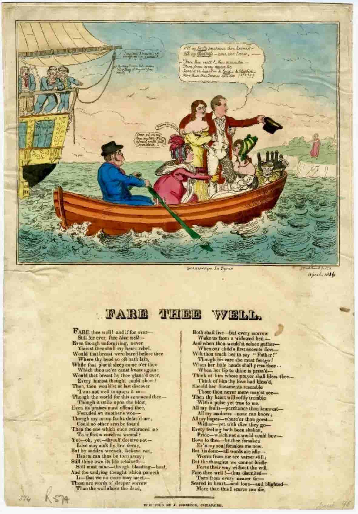
Don Juan stood and gazing from the stern,
Beheld his native Spain receding far.
First partings form a lesson hard to learn;
Even nations feel this when they go to war.
There is a sort of unexprest concern,
A kind of shock that sets one's heart ajar.
At leaving even the most unpleasant people
And places, one keeps looking at the steeple.
But Juan had got many things to leave,
His mother and a mistress and no wife,
So that he had much better cause to grieve
Than many persons more advanced in life.
And if we now and then a sigh must heave
At quitting even those we quit in strife,
No doubt we weep for those the heart endears,
That is, till deeper griefs congeal our tears.
So Juan wept, as wept the captive Jews
By Babel's waters, still remembering Sion.
I'd weep, but mine is not a weeping Muse,
And such light griefs are not a thing to die on.
Young men should travel, if but to amuse
Themselves; and the next time their servants tie on
Behind their carriages their new portmanteau,
Perhaps it may be lined with this my canto.
And Juan wept and much he sighed and thought,
While his salt tears dropped into the salt sea.
'Sweets to the sweet' (I like so much to quote,
You must excuse this extract;'tis where she,
The Queen of Denmark, for Ophelia brought
Flowers to the grave). And sobbing often, he
Reflected on his present situation
And seriously resolved on reformation.
'Farewell, my Spain, a long farewell!' he cried,
'Perhaps I may revisit thee no more,
But die, as many an exiled heart hath died,
Of its own thirst to see again thy shore.
Farewell, where Guadalquivir's waters glide.
Farewell, my mother, and since all is o'er,
Farewell too, dearest Julia!' Here he drew
Her letter out again and read it through.
'And oh, if e'er I should forget, I swear -
But that's impossible and cannot be.
Sooner shall this blue ocean melt to air,
Sooner shall earth resolve itself to sea
Than I resign thine image, oh my fair!
Or think of anything excepting thee.
A mind diseased no remedy can physic.'
(Here the ship gave a lurch, and he grew seasick.)
'Sooner shall heaven kiss earth' (here he fell sicker) -
'Oh Julia, what is every other woe?
(For God's sake let me have a glass of liquor,
Pedro, Battista, help me down below.)
Julia, my love (you rascal, Pedro, quicker),
Oh Julia (this curst vessel pitches so),
Belovéd Julia, hear me still beseeching!'
(Here he grew inarticulate with retching.)
He felt that chilling heaviness of heart,
Or rather stomach, which alas, attends,
Beyond the best apothecary's art,
The loss of love, the treachery of friends,
Or death of those we dote on, when a part
Of us dies with them as each fond hope ends.
No doubt he would have been much more pathetic,
But the sea acted as a strong emetic.
Love's a capricious power. I've known it hold
Out through a fever caused by its own heat,
But be much puzzled by a cough and cold
And find a quinsy very hard to treat.
Against all noble maladies he's bold,
But vulgar illnesses don't like to meet,
Nor that a sneeze should interrupt his sigh,
Nor inflammations redden his blind eye.
But worst of all is nausea or a pain
About the lower region of the bowels.
Love, who heroically breathes a vein,
Shrinks from the application of hot towels,
And purgatives are dangerous to his reign,
Seasickness death. His love was perfect; how else
Could Juan's passion, while the billows roar,
Resist his stomach, ne'er at sea before?
Seasickness death
B. could be very funny about mal-de-mer. On the point of boarding the Lisbon Packet at the start of his Grand Tour in 1809, he dashed off a brilliant verse on sea-sickness to Francis Hodgson, his Cambridge tutor, that was collected by Marchant with B.’s letters and journals. Here’s an excerpt:
Stretched along the deck like logs
Bear a hand—you jolly tar you!
Here’s a rope’s end for the dogs,
Hobhouse muttering fearful curses
As the hatchway down he rolls
Now his breakfast, now his verses
Vomits forth & damns our souls,
Here’s a stanza
On Braganza
Help!—a couplet—no, a cup
Of warm water,
What’s the matter?
Zounds! my liver’s coming up,
I shall not survive the racket
Of this brutal Lisbon Packet. …
The ship, called the most holy Trinidada,
Was steering duly for the port Leghorn,
For there the Spanish family Moncada
Were settled long ere Juan's sire was born.
They were relations, and for them he had a
Letter of introduction, which the morn
Of his departure had been sent him by
His Spanish friends for those in Italy.
His suite consisted of three servants and
A tutor, the licentiate Pedrillo,
Who several languages did understand,
But now lay sick and speechless on his pillow,
And rocking in his hammock, longed for land,
His headache being increased by every billow.
And the waves oozing through the porthole made
His berth a little damp, and him afraid.
'Twas not without some reason, for the wind
Increased at night until it blew a gale;
And though 'twas not much to a naval mind,
Some landsmen would have looked a little pale,
For sailors are in fact a different kind.
At sunset they began to take in sail,
For the sky showed it would come on to blow
And carry away perhaps a mast or so.
At one o'clock the wind with sudden shift
Threw the ship right into the trough of the sea,
Which struck her aft and made an awkward rift,
Started the sternpost, also shattered the
Whole of her stern-frame, and ere she could lift
Herself from out her present jeopardy
The rudder tore away.'Twas time to sound
The pumps, and there were four feet water found.
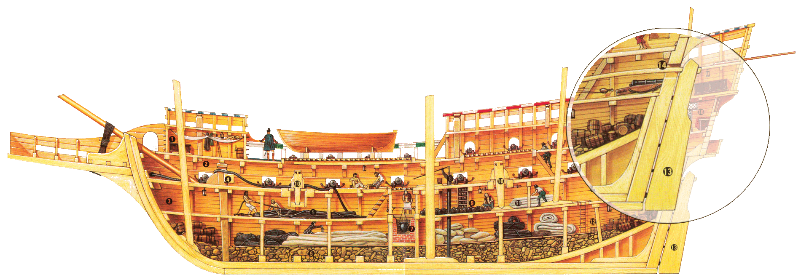
One gang of people instantly was put
Upon the pumps and the remainder set
To get up part of the cargo and what not,
But they could not come at the leak as yet.
At last they did get at it really, but
Still their salvation was an even bet.
The water rushed through in a way quite puzzling,
While they thrust sheets, shirts, jackets, bales of muslin
Into the opening, but all such ingredients
Would have been vain, and they must have gone down,
Despite of all their efforts and expedients,
But for the pumps. I'm glad to make them known
To all the brother tars who may have need hence,
For fifty tons of water were upthrown
By them per hour, and they had all been undone
But for the maker, Mr Mann, of London.
As day advanced the weather seemed to abate,
And then the leak they reckoned to reduce
And keep the ship afloat, though three feet yet
Kept two hand and one chain pump still in use.
The wind blew fresh again; as it grew late
A squall came on, and while some guns broke loose,
A gust, which all descriptive power transcends,
Laid with one blast the ship on her beam ends.
There she lay, motionless, and seemed upset.
The water left the hold and washed the decks
And made a scene men do not soon forget,
For they remember battles, fires, and wrecks,
Or any other thing that brings regret
Or breaks their hopes or hearts or heads or necks.
Thus drownings are much talked of by the divers
And swimmers who may chance to be survivors.
Immediately the masts were cut away,
Both main and mizen. First the mizen went,
The mainmast followed, but the ship still lay
Like a mere log and baffled our intent.
Foremast and bowsprit were cut down, and they
Eased her at last (although we never meant
To part with all till every hope was blighted),
And then with violence the old ship righted.
It may be easily supposed, while this
Was going on, some people were unquiet,
That passengers would find it much amiss
To lose their lives as well as spoil their diet,
That even the able seaman, deeming his
Days nearly o'er, might be disposed to riot,
As upon such occasions tars will ask
For grog and sometimes drink rum from the cask.
There's nought no doubt so much the spirit calms
As rum and true religion; thus it was,
Some plundered, some drank spirits, some sung psalms.
The high wind made the treble, and as bass
The hoarse harsh waves kept time. Fright cured the qualms
Of all the luckless landsmen's seasick maws.
Strange sounds of wailing, blasphemy, devotion
Clamoured in chorus to the roaring ocean.
Perhaps more mischief had been done, but for
Our Juan, who with sense beyond his years,
Got to the spirit-room and stood before
It with a pair of pistols. And their fears,
As if Death were more dreadful by his door
Of fire than water, spite of oaths and tears,
Kept still aloof the crew, who ere they sunk,
Thought it would be becoming to die drunk.
'Give us more grog,' they cried, 'for it will be
All one an hour hence.' Juan answered, 'No!
'Tis true that death awaits both you and me,
But let us die like men, not sink below
Like brutes.' And thus his dangerous post kept he,
And none liked to anticipate the blow,
And even Pedrillo, his most reverend tutor,
Was for some rum a disappointed suitor.
The good old gentleman was quite aghast
And made a loud and pious lamentation,
Repented all his sins, and made a last
Irrevocable vow of reformation:
Nothing should tempt him more (this peril past)
To quit his academic occupation
In cloisters of the classic Salamanca,
To follow Juan's wake like Sancho Panca.
But now there came a flash of hope once more;
Day broke, and the wind lulled. The masts were gone,
The leak increased, shoals round her, but no shore;
The vessel swam, yet still she held her own.
They tried the pumps again, and though before
Their desperate efforts seemed all useless grown,
A glimpse of sunshine set some hands to bale;
The stronger pumped, the weaker thrummed a sail.
Under the vessel's keel the sail was past,
And for the moment it had some effect;
But with a leak and not a stick of mast
Nor rag of canvas, what could they expect?
But still'tis best to struggle to the last,
'Tis never too late to be wholly wrecked.
And though'tis true that man can only die once,
'Tis not so pleasant in the Gulf of Lyons.
There winds and waves had hurled them, and from thence
Without their will they carried them away,
For they were forced with steering to dispense,
And never had as yet a quiet day
On which they might repose, or even commence
A jury mast or rudder, or could say
The ship would swim an hour, which by good luck
Still swam—though not exactly like a duck.
The wind in fact perhaps was rather less,
But the ship laboured so, they scarce could hope
To weather out much longer. The distress
Was also great with which they had to cope
For want of water, and their solid mess
Was scant enough. In vain the telescope
Was used; nor sail nor shore appeared in sight,
Nought but the heavy sea and coming night.
Again the weather threatened, again blew
A gale, and in the fore and after hold
Water appeared; yet though the people knew
All this, the most were patient, and some bold,
Until the chains and leathers were worn through
Of all our pumps. A wreck complete she rolled
At mercy of the waves, whose mercies are
Like human beings during civil war.
Then came the carpenter, at last, with tears
In his rough eyes and told the captain he
Could do no more. He was a man in years
And long had voyaged through many a stormy sea,
And if he wept at length, they were not fears
That made his eyelids as a woman's be,
But he, poor fellow, had a wife and children,
Two things for dying people quite bewildering.
The ship was evidently settling now
Fast by the head; and all distinction gone,
Some went to prayers again and made a vow
Of candles to their saints, but there were none
To pay them with; and some looked o'er the bow;
Some hoisted out the boats; and there was one
That begged Pedrillo for an absolution,
Who told him to be damned—in his confusion.
Some lashed them in their hammocks; some put on
Their best clothes, as if going to a fair;
Some cursed the day on which they saw the sun
And gnashed their teeth and howling tore their hair;
And others went on as they had begun,
Getting the boats out, being well aware
That a tight boat will live in a rough sea,
Unless with breakers close beneath her lee.
The worst of all was that in their condition,
Having been several days in great distress,
'Twas difficult to get out such provision
As now might render their long suffering less.
Men, even when dying, dislike inanition.
Their stock was damaged by the weather's stress;
Two casks of biscuit and a keg of butter
Were all that could be thrown into the cutter.
But in the longboat they contrived to stow
Some pounds of bread, though injured by the wet;
Water, a twenty gallon cask or so;
Six flasks of wine. And they contrived to get
A portion of their beef up from below,
And with a piece of pork moreover met,
But scarce enough to serve them for a luncheon;
Then there was rum, eight gallons in a puncheon.
The other boats, the yawl and pinnace, had
Been stove in the beginning of the gale;
And the longboat's condition was but bad,
As there were but two blankets for a sail
And one oar for a mast, which a young lad
Threw in by good luck over the ship's rail.
And two boats could not hold, far less be stored,
To save one half the people then on board.
'Twas twilight and the sunless day went down
Over the waste of waters. Like a veil,
Which if withdrawn would but disclose the frown
Of one whose hate is masked but to assail,
Thus to their hopeless eyes the night was shown
And grimly darkled o'er their faces pale
And the dim desolate deep. Twelve days had Fear
Been their familiar, and now Death was here.
Some trial had been making at a raft
With little hope in such a rolling sea,
A sort of thing at which one would have laughed,
If any laughter at such times could be,
Unless with people who too much have quaffed
And have a kind of wild and horrid glee,
Half epileptical and half hysterical.
Their preservation would have been a miracle.
At half past eight o'clock, booms, hencoops, spars
And all things for a chance had been cast loose,
That still could keep afloat the struggling tars,
For yet they strove, although of no great use.
There was no light in heaven but a few stars,
The boats put off o'ercrowded with their crews.
She gave a heel and then a lurch to port,
And going down head foremost—sunk, in short.
Then rose from sea to sky the wild farewell,
Then shrieked the timid, and stood still the brave,
Then some leaped overboard with dreadful yell,
As eager to anticipate their grave.
And the sea yawned around her like a hell,
And down she sucked with her the whirling wave,
Like one who grapples with his enemy
And strives to strangle him before he die.
And first one universal shriek there rushed,
Louder than the loud ocean, like a crash
Of echoing thunder, and then all was hushed,
Save the wild wind and the remorseless dash
Of billows; but at intervals there gushed,
Accompanied with a convulsive splash,
A solitary shriek, the bubbling cry
Of some strong swimmer in his agony.
The boats, as stated, had got off before,
And in them crowded several of the crew.
And yet their present hope was hardly more
Than what it had been, for so strong it blew
There was slight chance of reaching any shore.
And then they were too many, though so few,
Nine in the cutter, thirty in the boat
Were counted in them when they got afloat.
All the rest perished; near two hundred souls
Had left their bodies. And what's worse, alas,
When over Catholics the ocean rolls,
They must wait several weeks before a mass
Takes off one peck of purgatorial coals,
Because, till people know what's come to pass,
They won't lay out their money on the dead.
It costs three francs for every mass that's said.
Juan got into the longboat and there
Contrived to help Pedrillo to a place.
It seemed as if they had exchanged their care,
For Juan wore the magisterial face
Which courage gives, while poor Pedrillo's pair
Of eyes were crying for their owner's case.
Battista, though (a name called shortly Tita),
Was lost by getting at some aqua vita.
Pedro, his valet, too he tried to save,
But the same cause, conducive to his loss,
Left him so drunk he jumped into the wave
As o'er the cutter's edge he tried to cross,
And so he found a wine-and-watery grave.
They could not rescue him although so close,
Because the sea ran higher every minute,
And for the boat—the crew kept crowding in it.
A small old spaniel, which had been Don Jóse's,
His father's, whom he loved as ye may think
(For on such things the memory reposes
With tenderness), stood howling on the brink,
Knowing (dogs have such intellectual noses),
No doubt the vessel was about to sink.
And Juan caught him up and ere he stepped
Off threw him in, then after him he leaped.
He also stuffed his money where he could
About his person and Pedrillo's too,
Who let him do in fact whate'er he would,
Not knowing what himself to say or do,
As every rising wave his dread renewed.
But Juan, trusting they might still get through
And deeming there were remedies for any ill,
Thus re-embarked his tutor and his spaniel.
'Twas a rough night and blew so stiffly yet
That the sail was becalmed between the seas,
Though on the wave's high top too much to set,
They dared not take it in for all the breeze.
Each sea curled o'er the stern and kept them wet
And made them bail without a moment's ease,
So that themselves as well as hopes were damped,
And the poor little cutter quickly swamped.
Nine souls more went in her. The longboat still
Kept above water, with an oar for mast.
Two blankets stitched together, answering ill
Instead of sail, were to the oar made fast.
Though every wave rolled menacing to fill,
And present peril all before surpassed,
They grieved for those who perished with the cutter,
And also for the biscuit casks and butter.
The sun rose red and fiery, a sure sign
Of the continuance of the gale. To run
Before the sea until it should grow fine
Was all that for the present could be done.
A few teaspoonfuls of their rum and wine
Were served out to the people, who begun
To faint, and damaged bread wet through the bags.
And most of them had little clothes but rags.
They counted thirty, crowded in a space
Which left scarce room for motion or exertion.
They did their best to modify their case;
One half sate up, though numbed with the immersion
While t'other half were laid down in their place,
At watch and watch. Thus, shivering like the tertian
Ague in its cold fit, they filled their boat,
With nothing but the sky for a greatcoat.
'Tis very certain the desire of life
Prolongs it; this is obvious to physicians,
When patients, neither plagued with friends nor wife,
Survive through very desperate conditions,
Because they still can hope, nor shines the knife
Nor shears of Atropos before their visions.
Despair of all recovery spoils longevity,
And makes men's miseries of alarming brevity.
'Tis said that persons living on annuities
Are longer lived than others, God knows why,
Unless to plague the grantors; yet so true it is,
That some, I really think, do never die.
Of any creditors the worst a Jew it is,
And that's their mode of furnishing supply.
In my young days they lent me cash that way,
Which I found very troublesome to pay.
'Tis thus with people in an open boat;
They live upon the love of life and bear
More than can be believed or even thought,
And stand like rocks the tempest's wear and tear.
And hardship still has been the sailor's lot,
Since Noah's ark went cruising here and there.
She had a curious crew as well as cargo,
Like the first old Greek privateer, the Argo.
But man is a carnivorous production
And must have meals, at least one meal a day.
He cannot live like woodcocks upon suction,
But like the shark and tiger must have prey.
Although his anatomical construction
Bears vegetables in a grumbling way,
Your labouring people think beyond all question,
Beef, veal, and mutton better for digestion.
And thus it was with this our hapless crew,
For on the third day there came on a calm,
And though at first their strength it might renew,
And lying on their weariness like balm,
Lulled them like turtles sleeping on the blue
Of ocean, when they woke they felt a qualm
And fell all ravenously on their provision,
Instead of hoarding it with due precision.
The consequence was easily foreseen:
They ate up all they had and drank their wine
In spite of all remonstrances, and then
On what in fact next day were they to dine?
They hoped the wind would rise, these foolish men,
And carry them to shore. These hopes were fine,
But as they had but one oar, and that brittle,
It would have been more wise to save their victual.
The fourth day came, but not a breath of air,
And ocean slumbered like an unweaned child.
The fifth day, and their boat lay floating there,
The sea and sky were blue and clear and mild.
With their one oar (I wish they had had a pair)
What could they do? And hunger's rage grew wild,
So Juan's spaniel, spite of his entreating,
Was killed and portioned out for present eating.
On the sixth day they fed upon his hide,
And Juan, who had still refused, because
The creature was his father's dog that died,
Now feeling all the vulture in his jaws,
With some remorse received (though first denied)
As a great favour one of the forepaws,
Which he divided with Pedrillo, who
Devoured it, longing for the other too.
The seventh day and no wind. The burning sun
Blistered and scorched, and stagnant on the sea
They lay like carcasses, and hope was none,
Save in the breeze that came not. Savagely
They glared upon each other. All was done,
Water and wine and food, and you might see
The longings of the cannibal arise
(Although they spoke not) in their wolfish eyes.
At length one whispered his companion, who
Whispered another, and thus it went round,
And then into a hoarser murmur grew,
An ominous and wild and desperate sound,
And when his comrade's thought each sufferer knew,
'Twas but his own, suppressed till now, he found.
And out they spoke of lots for flesh and blood,
And who should die to be his fellow's food.
But ere they came to this, they that day shared
Some leathern caps and what remained of shoes;
And then they looked around them and despaired,
And none to be the sacrifice would choose.
At length the lots were torn up and prepared,
But of materials that much shock the Muse.
Having no paper, for the want of better,
They took by force from Juan Julia's letter.
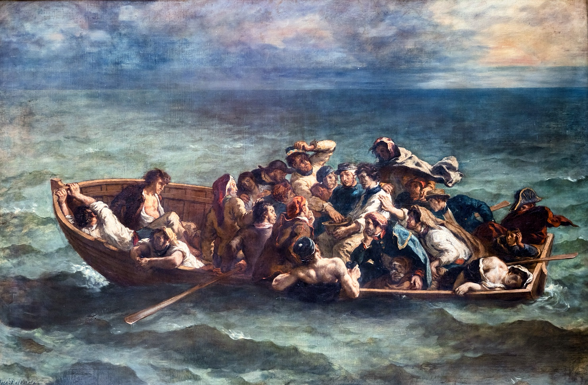
The lots were made and marked and mixed and handed
In silent horror, and their distribution
Lulled even the savage hunger which demanded,
Like the Promethean vulture, this pollution.
None in particular had sought or planned it;
'Twas nature gnawed them to this resolution,
By which none were permitted to be neuter,
And the lot fell on Juan's luckless tutor.
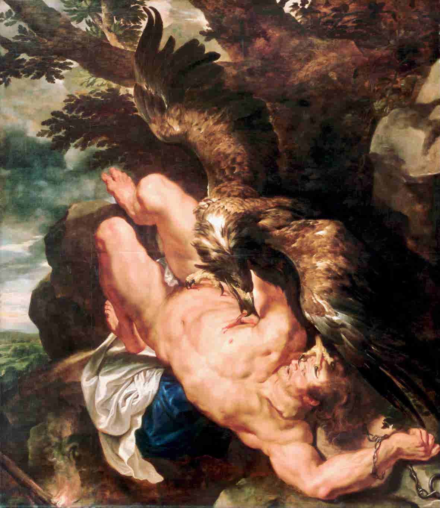
He but requested to be bled to death.
The surgeon had his instruments and bled
Pedrillo, and so gently ebbed his breath
You hardly could perceive when he was dead.
He died as born, a Catholic in faith,
Like most in the belief in which they're bred,
And first a little crucifix he kissed,
And then held out his jugular and wrist
The surgeon, as there was no other fee,
Had his first choice of morsels for his pains,
But being thirstiest at the moment, he
Preferred a draught from the fast-flowing veins.
Part was divided, part thrown in the sea,
And such things as the entrails and the brains
Regaled two sharks who followed o'er the billow.
The sailors ate the rest of poor Pedrillo.
The sailors ate him, all save three or four,
Who were not quite so fond of animal food.
To these was added Juan, who, before
Refusing his own spaniel, hardly could
Feel now his appetite increased much more.
'Twas not to be expected that he should,
Even in extremity of their disaster,
Dine with them on his pastor and his master.
'Twas better that he did not, for in fact
The consequence was awful in the extreme.
For they who were most ravenous in the act
Went raging mad. Lord! how they did blaspheme
And foam and roll, with strange convulsions racked,
Drinking salt water like a mountain stream,
Tearing and grinning, howling, screeching, swearing,
And with hyena laughter died despairing.
Their numbers were much thinned by this infliction,
And all the rest were thin enough, heaven knows,
And some of them had lost their recollection,
Happier than they who still perceived their woes,
But others pondered on a new dissection,
As if not warned sufficiently by those
Who had already perished, suffering madly,
For having used their appetites so sadly.
And next they thought upon the master's mate
As fattest, but he saved himself, because,
Besides being much averse from such a fate,
There were some other reasons: the first was
He had been rather indisposed of late,
And that which chiefly proved his saving clause
Was a small present made to him at Cadiz,
By general subscription of the ladies.
Of poor Pedrillo something still remained,
But was used sparingly. Some were afraid,
And others still their appetites constrained,
Or but at times a little supper made;
All except Juan, who throughout abstained,
Chewing a piece of bamboo and some lead.
At length they caught two boobies and a noddy,
And then they left off eating the dead body.
And if Pedrillo's fate should shocking be,
Remember Ugolino condescends
To eat the head of his archenemy,
The moment after he politely ends
His tale. If foes be food in hell, at sea
'Tis surely fair to dine upon our friends
When shipwreck's short allowance grows too scanty,
Without being much more horrible than Dante.
And the same night there fell a shower of rain,
For which their mouths gaped like the cracks of earth
When dried to summer dust. Till taught by pain,
Men really know not what good water's worth.
If you had been in Turkey or in Spain,
Or with a famished boat's crew had your berth,
Or in the desert heard the camel's bell,
You'd wish yourself where truth is—in a well.
It poured down torrents, but they were no richer
Until they found a ragged piece of sheet,
Which served them as a sort of spongy pitcher,
And when they deemed its moisture was complete,
They wrung it out, and though a thirsty ditcher
Might not have thought the scanty draught so sweet
As a full pot of porter, to their thinking
They ne'er till now had known the joys of drinking.
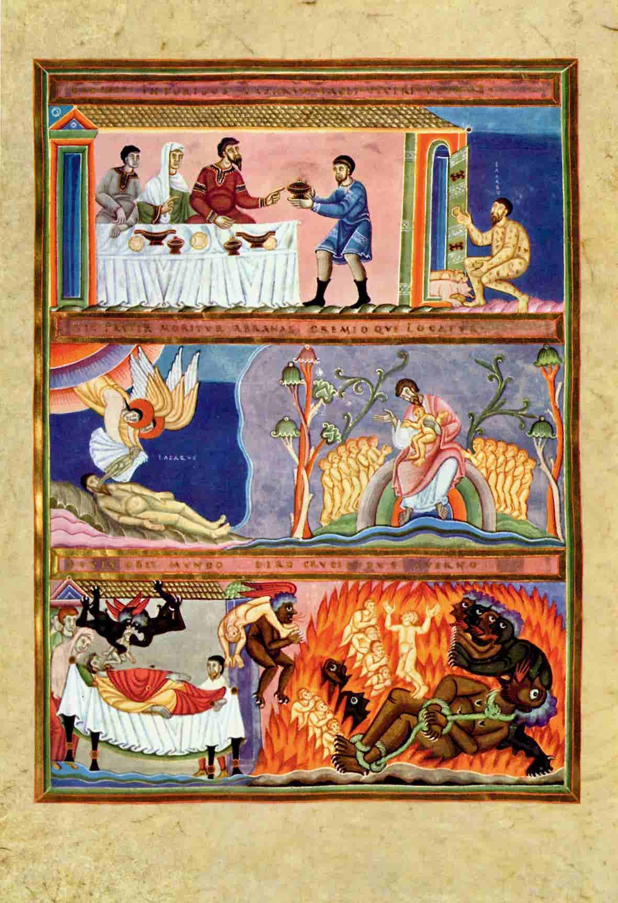
And their baked lips, with many a bloody crack,
Sucked in the moisture, which like nectar streamed.
Their throats were ovens, their swoll'n tongues were black,
As the rich man's in hell, who vainly screamed
To beg the beggar, who could not rain back
A drop of dew, when every drop had seemed
To taste of heaven. If this be true, indeed
Some Christians have a comfortable creed.
There were two fathers in this ghastly crew
And with them their two sons, of whom the one
Was more robust and hardy to the view,
But he died early, and when he was gone,
His nearest messmate told his sire, who threw
One glance on him and said, 'Heaven's will be done!
I can do nothing,' and he saw him thrown
Into the deep without a tear or groan.
The other father had a weaklier child,
Of a soft cheek and aspect delicate,
But the boy bore up long and with a mild
And patient spirit held aloof his fate.
Little he said and now and then he smiled,
As if to win a part from off the weight
He saw increasing on his father's heart,
With the deep deadly thought that they must part
And o'er him bent his sire and never raised
His eyes from off his face, but wiped the foam
From his pale lips, and ever on him gazed,
And when the wished-for shower at length was come,
And the boy's eyes, which the dull film half glazed,
Brightened and for a moment seemed to roam,
He squeezed from out a rag some drops of rain
Into his dying child's mouth—but in vain.
The boy expired. The father held the clay
And looked upon it long, and when at last
Death left no doubt, and the dead burden lay
Stiff on his heart, and pulse and hope were past,
He watched it wistfully, until away
'Twas borne by the rude wave wherein'twas cast.
Then he himself sunk down all dumb and shivering,
And gave no sign of life, save his limbs quivering.
Now overhead a rainbow, bursting through
The scattering clouds, shone, spanning the dark sea,
Resting its bright base on the quivering blue,
And all within its arch appeared to be
Clearer than that without, and its wide hue
Waxed broad and waving, like a banner free,
Then changed like to a bow that's bent, and then
Forsook the dim eyes of these shipwrecked men.
It changed of course—a heavenly chameleon,
The airy child of vapour and the sun,
Brought forth in purple, cradled in vermilion,
Baptized in molten gold and swathed in dun,
Glittering like crescents o'er a Turk's pavilion
And blending every colour into one,
Just like a black eye in a recent scuffle
(For sometimes we must box without the muffle).
Our shipwrecked seamen thought it a good omen;
It is as well to think so now and then.
'Twas an old custom of the Greek and Roman,
And may become of great advantage when
Folks are discouraged; and most surely no men
Had greater need to nerve themselves again
Than these, and so this rainbow looked like hope,
Quite a celestial kaleidoscope.
About this time a beautiful white bird,
Webfooted, not unlike a dove in size
And plumage (probably it might have erred
Upon its course), passed oft before their eyes
And tried to perch, although it saw and heard
The men within the boat, and in this guise
It came and went and fluttered round them till
Night fell. This seemed a better omen still.
But in this case I also must remark,
'Twas well this bird of promise did not perch,
Because the tackle of our shattered bark
Was not so safe for roosting as a church,
And had it been the dove from Noah's ark,
Returning there from her successful search,
Which in their way that moment chanced to fall,
They would have eat her, olive branch and all.
With twilight it again came on to blow,
But not with violence. The stars shone out,
The boat made way; yet now they were so low
They knew not where nor what they were about.
Some fancied they saw land, and some said, 'No!'
The frequent fog banks gave them cause to doubt.
Some swore that they heard breakers, others guns,
And all mistook about the latter once.
As morning broke the light wind died away,
When he who had the watch sung out and swore,
If 'twas not land that rose with the sun's ray,
He wished that land he never might see more.
And the rest rubbed their eyes and saw a bay
Or thought they saw, and shaped their course for shore,
For shore it was and gradually grew
Distinct and high and palpable to view.
And then of these some part burst into tears,
And others, looking with a stupid stare,
Could not yet separate their hopes from fears
And seemed as if they had no further care,
While a few prayed (the first time for some years).
And at the bottom of the boat three were
Asleep; they shook them by the hand and head
And tried to awaken them, but found them dead.
The day before, fast sleeping on the water,
They found a turtle of the hawksbill kind,
And by good fortune gliding softly, caught her,
Which yielded a day's life and to their mind
Proved even still a more nutritious matter,
Because it left encouragement behind.
They thought that in such perils more than chance
Had sent them this for their deliverance.
The land appeared a high and rocky coast,
And higher grew the mountains as they drew,
Set by a current, toward it. They were lost
In various conjectures, for none knew
To what part of the earth they had been tost,
So changeable had been the winds that blew.
Some thought it was Mount Etna, some the highlands
Of Candia, Cyprus, Rhodes, or other islands.
Meantime the current, with a rising gale,
Still set them onwards to the welcome shore,
Like Charon's bark of spectres, dull and pale.
Their living freight was now reduced to four,
And three dead, whom their strength could not avail
To heave into the deep with those before,
Though the two sharks still followed them and dashed
The spray into their faces as they splashed.
Famine, despair, cold, thirst, and heat had done
Their work on them by turns, and thinned them to
Such things a mother had not known her son
Amidst the skeletons of that gaunt crew.
By night chilled, by day scorched, thus one by one
They perished, until withered to these few,
But chiefly by a species of self-slaughter,
In washing down Pedrillo with salt water.
As they drew nigh the land, which now was seen
Unequal in its aspect here and there,
They felt the freshness of its growing green,
That waved in forest-tops and smoothed the air,
And fell upon their glazed eyes like a screen
From glistening waves and skies so hot and bare.
Lovely seemed any object that should sweep
Away the vast, salt, dread, eternal deep.
The shore looked wild without a trace of man
And girt by formidable waves; but they
Were mad for land, and thus their course they ran,
Though right ahead the roaring breakers lay.
A reef between them also now began
To show its boiling surf and bounding spray,
But finding no place for their landing better,
They ran the boat for shore and overset her.
But in his native stream, the Guadalquivir,
Juan to lave his youthful limbs was wont,
And having learnt to swim in that sweet river,
Had often turned the art to some account.
A better swimmer you could scarce see ever,
He could perhaps have passed the Hellespont,
As once (a feat on which ourselves we prided)
Leander, Mr Ekenhead, and I did.
So here, though faint, emaciated, and stark,
He buoyed his boyish limbs and strove to ply
With the quick wave and gain, ere it was dark,
The beach which lay before him, high and dry.
The greatest danger here was from a shark,
That carried off his neighbour by the thigh.
As for the other two they could not swim,
So nobody arrived on shore but him.
Nor yet had he arrived but for the oar,
Which providentially for him was washed
Just as his feeble arms could strike no more,
And the hard wave o'erwhelmed him as'twas dashed
Within his grasp. He clung to it, and sore
The waters beat while he thereto was lashed.
At last with swimming, wading, scrambling, he
Rolled on the beach, half senseless, from the sea.
There breathless, with his digging nails he clung
Fast to the sand, lest the returning wave,
From whose reluctant roar his life he wrung,
Should suck him back to her insatiate grave.
And there he lay full length, where he was flung,
Before the entrance of a cliff-worn cave,
With just enough of life to feel its pain
And deem that it was saved, perhaps in vain.
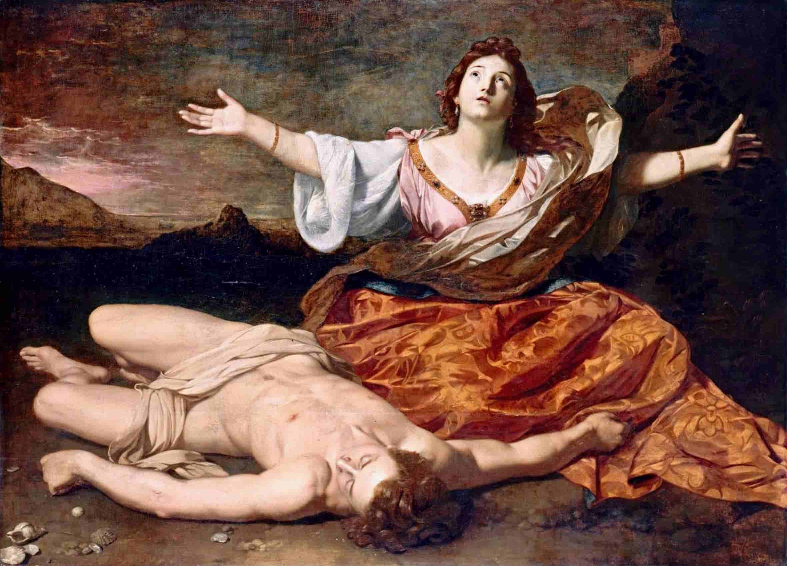
With slow and staggering effort he arose,
But sunk again upon his bleeding knee
And quivering hand; and then he looked for those
Who long had been his mates upon the sea,
But none of them appeared to share his woes,
Save one, a corpse from out the famished three,
Who died two days before and now had found
An unknown barren beach for burial ground.
And as he gazed, his dizzy brain spun fast
And down he sunk, and as he sunk, the sand
Swam round and round, and all his senses passed.
He fell upon his side, and his stretched hand
Drooped dripping on the oar (their jury mast),
And like a withered lily, on the land
His slender frame and pallid aspect lay,
As fair a thing as e'er was formed of clay.
How long in his damp trance young Juan lay
He knew not, for the earth was gone for him,
And time had nothing more of night nor day
For his congealing blood and senses dim.
And how this heavy faintness passed away
He knew not, till each painful pulse and limb
And tingling vein seemed throbbing back to life,
For Death, though vanquished, still retired with strife.
His eyes he opened, shut, again unclosed,
For all was doubt and dizziness. He thought
He still was in the boat and had but dozed,
And felt again with his despair o'erwrought,
And wished it death in which he had reposed,
And then once more his feelings back were brought,
And slowly by his swimming eyes was seen
A lovely female face of Seventeen.
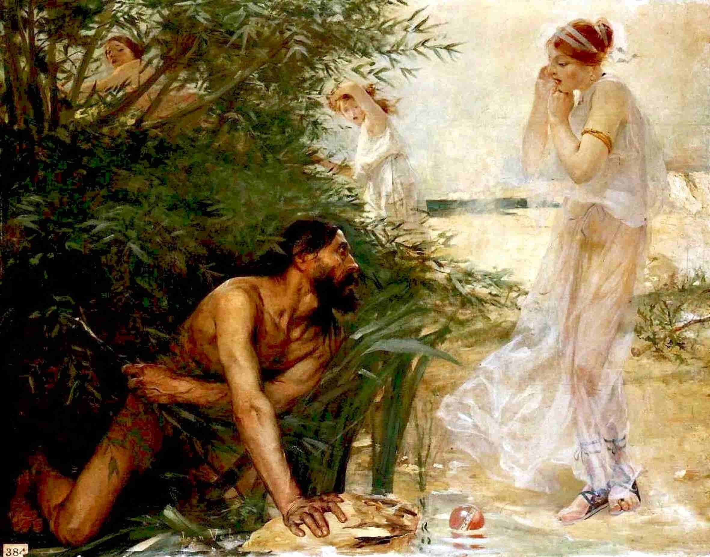
'T was bending close o'er his, and the small mouth
Seem'd almost prying into his for breath;
And chafing him, the soft warm hand of youth
Recall'd his answering spirits back from death;
And, bathing his chill temples, tried to soothe
Each pulse to animation, till beneath
Its gentle touch and trembling care, a sigh
To these kind efforts made a low reply.
Then was the cordial poured, and mantle flung
Around his scarce-clad limbs; and the fair arm
Raised higher the faint head which o'er it hung.
And her transparent cheek, all pure and warm,
Pillowed his death-like forehead. Then she wrung
His dewy curls, long drenched by every storm,
And watched with eagerness each throb that drew
A sigh from his heaved bosom—and hers too.
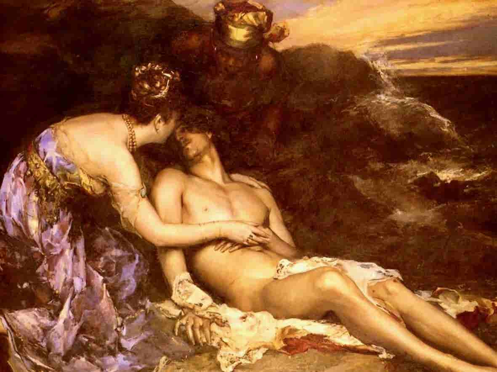
And lifting him with care into the cave,
The gentle girl and her attendant—one
Young, yet her elder, and of brow less grave,
And more robust of figure—then begun
To kindle fire, and as the new flames gave
Light to the rocks that roofed them, which the sun
Had never seen, the maid or whatsoe'er
She was appeared distinct and tall and fair.
Her brow was overhung with coins of gold,
That sparkled o'er the auburn of her hair,
Her clustering hair, whose longer locks were rolled
In braids behind, and though her stature were
Even of the highest for a female mould,
They nearly reached her heel. And in her air
There was a something which bespoke command,
As one who was a lady in the land.
Her hair, I said, was auburn, but her eyes
Were black as death, their lashes the same hue,
Of downcast length, in whose silk shadow lies
Deepest attraction, for when to the view
Forth from its raven fringe the full glance flies,
Ne'er with such force the swiftest arrow flew.
'Tis as the snake late coiled, who pours his length
And hurls at once his venom and his strength.
Her brow was white and low, her cheek's pure dye
Like twilight rosy still with the set sun.
Short upper lip—sweet lips! that make us sigh
Ever to have seen such; for she was one
Fit for the model of a statuary
(A race of mere impostors, when all's done;
I've seen much finer women, ripe and real,
Than all the nonsense of their stone ideal).
I'll tell you why I say so, for'tis just
One should not rail without a decent cause.
There was an Irish lady, to whose bust
I ne'er saw justice done, and yet she was
A frequent model; and if e'er she must
Yield to stern Time and Nature's wrinkling laws,
They will destroy a face which mortal thought
Ne'er compassed, nor less mortal chisel wrought.
And such was she, the lady of the cave.
Her dress was very different from the Spanish,
Simpler and yet of colours not so grave,
For as you know, the Spanish women banish
Bright hues when out of doors, and yet, while wave
Around them (what I hope will never vanish)
The basquina and the mantilla, they
Seem at the same time mystical and gay.
But with our damsel this was not the case;
Her dress was many-coloured, finely spun.
Her locks curled negligently round her face,
But through them gold and gems profusely shone.
Her girdle sparkled, and the richest lace
Flowed in her veil, and many a precious stone
Flashed on her little hand, but what was shocking,
Her small snow feet had slippers, but no stocking.
The other female's dress was not unlike,
But of inferior materials. She
Had not so many ornaments to strike,
Her hair had silver only, bound to be
Her dowry, and her veil, in form alike,
Was coarser, and her air, though firm, less free.
Her hair was thicker, but less long, her eyes
As black, but quicker and of smaller size.
And these two tended him and cheered him both
With food and raiment and those soft attentions,
Which are (as I must own) of female growth,
And have ten thousand delicate inventions.
They made a most superior mess of broth,
A thing which poesy but seldom mentions,
But the best dish that e'er was cooked since Homer's
Achilles ordered dinner for newcomers.
I'll tell you who they were, this female pair,
Lest they should seem princesses in disguise.
Besides I hate all mystery and that air
Of claptrap, which your recent poets prize.
And so in short the girls they really were
They shall appear before your curious eyes,
Mistress and maid; the first was only daughter
Of an old man, who lived upon the water.
A fisherman he had been in his youth,
And still a sort of fisherman was he.
But other speculations were, in sooth,
Added to his connexion with the sea,
Perhaps not so respectable, in truth.
A little smuggling and some piracy
Left him at last the sole of many masters
Of an ill-gotten million of piastres.
A fisher therefore was he, though of men,
Like Peter the Apostle, and he fished
For wandering merchant vessels now and then
And sometimes caught as many as he wished.
The cargoes he confiscated, and gain
He sought in the slave market too and dished
Full many a morsel for that Turkish trade,
By which no doubt a good deal may be made.
He was a Greek, and on his isle had built
(One of the wild and smaller Cyclades)
A very handsome house from out his guilt,
And there he lived exceedingly at ease.
Heaven knows what cash he got or blood he spilt;
A sad old fellow was he, if you please.
But this I know, it was a spacious building,
Full of barbaric carving, paint, and gilding.
He had an only daughter, called Haidée,
The greatest heiress of the Eastern Isles;
Besides, so very beautiful was she
Her dowry was as nothing to her smiles.
Still in her teens, and like a lovely tree
She grew to womanhood, and between whiles
Rejected several suitors, just to learn
How to accept a better in his turn.
And walking out upon the beach below
The cliff, towards sunset, on that day she found,
Insensible, not dead, but nearly so,
Don Juan, almost famished and half drowned.
But being naked, she was shocked, you know,
Yet deemed herself in common pity bound,
As far as in her lay, 'to take him in,
A stranger' dying, with so white a skin.
But taking him into her father's house
Was not exactly the best way to save,
But like conveying to the cat the mouse,
Or people in a trance into their grave,
Because the good old man had so much greeknousenglish,
Unlike the honest Arab thieves so brave,
He would have hospitably cured the stranger
And sold him instantly when out of danger.
And therefore with her maid she thought it best
(A virgin always on her maid relies)
To place him in the cave for present rest.
And when at last he opened his black eyes,
Their charity increased about their guest,
And their compassion grew to such a size
It opened half the turnpike gates to heaven
(St Paul says 'tis the toll which must be given).
They made a fire, but such a fire as they
Upon the moment could contrive with such
Materials as were cast up round the bay,
Some broken planks and oars, that to the touch
Were nearly tinder, since so long they lay;
A mast was almost crumbled to a crutch,
But by God's grace, here wrecks were in such plenty
That there was fuel to have furnished twenty.
He had a bed of furs and a pelisse,
For Haidée stripped her sables off to make
His couch, and that he might be more at ease
And warm, in case by chance he should awake,
They also gave a petticoat apiece,
She and her maid, and promised by daybreak
To pay him a fresh visit with a dish
For breakfast of eggs, coffee, bread, and fish.
And thus they left him to his lone repose.
Juan slept like a top or like the dead,
Who sleep at last perhaps (God only knows),
Just for the present. And in his lulled head
Not even a vision of his former woes
Throbbed in accurséd dreams, which sometimes spread
Unwelcome visions of our former years,
Till the eye, cheated, opens thick with tears.
Young Juan slept all dreamless, but the maid,
Who smoothed his pillow as she left the den,
Looked back upon him and a moment stayed
And turned, believing that he called again.
He slumbered, yet she thought, at least she said
(The heart will slip even as the tongue and pen),
He had pronounced her name, but she forgot
That at this moment Juan knew it not.
And pensive to her father's house she went,
Enjoining silence strict to Zoe, who
Better than her knew what in fact she meant,
She being wiser by a year or two.
A year or two's an age when rightly spent,
And Zoe spent hers, as most women do,
In gaining all that useful sort of knowledge
Which is acquired in Nature's good old college.
The morn broke, and found Juan slumbering still
Fast in his cave, and nothing clashed upon
His rest. The rushing of the neighbouring rill
And the young beams of the excluded sun
Troubled him not, and he might sleep his fill.
And need he had of slumber yet, for none
Had suffered more; his hardships were comparative
To those related in my grand-dad's narrative.
Not so Haidée; she sadly tossed and tumbled
And started from her sleep, and turning o'er,
Dreamed of a thousand wrecks, o'er which she stumbled,
And handsome corpses strewed upon the shore,
And woke her maid so early that she grumbled,
And called her father's old slaves up, who swore
In several oaths—Armenian, Turk, and Greek -
They knew not what to think of such a freak.
But up she got and up she made them get,
With some pretence about the sun, that makes
Sweet skies just when he rises or is set.
And'tis no doubt a sight to see when breaks
Bright Phoebus while the mountains still are wet
With mist, and every bird with him awakes,
And night is flung off like a mourning suit
Worn for a husband, or some other brute.
I say, the sun is a most glorious sight.
I've seen him rise full oft; indeed of late
I have sate up on purpose all the night,
Which hastens, as physicians say, one's fate.
And so all ye who would be in the right
In health and purse, begin your day to date
From daybreak, and when coffined at fourscore,
Engrave upon the plate, you rose at four.
And Haidée met the morning face to face.
Her own was freshest, though a feverish flush
Had dyed it with the headlong blood, whose race
From heart to cheek is curbed into a blush,
Like to a torrent which a mountain's base,
That overpowers some alpine river's rush,
Checks to a lake, whose waves in circles spread;
Or the Red Sea—but the sea is not red.
And down the cliff the island virgin came,
And near the cave her quick light footsteps drew,
While the sun smiled on her with his first flame,
And young Aurora kissed her lips with dew,
Taking her for a sister. Just the same
Mistake you would have made on seeing the two,
Although the mortal, quite as fresh and fair,
Had all the advantage too of not being air.
And when into the cavern Haidée stepped
All timidly, yet rapidly, she saw
That like an infant Juan sweetly slept.
And then she stopped and stood as if in awe
(For sleep is awful) and on tiptoe crept
And wrapt him closer, lest the air, too raw,
Should reach his blood, then o'er him still as death
Bent, with hushed lips, that drank his scarce drawn breath.
And thus like to an angel o'er the dying
Who die in righteousness she leaned; and there
All tranquilly the shipwrecked boy was lying,
As o'er him lay the calm and stirless air.
But Zoe the meantime some eggs was frying,
Since, after all, no doubt the youthful pair
Must breakfast; and betimes, lest they should ask it,
She drew out her provision from the basket.
She knew that the best feelings must have victual,
And that a shipwrecked youth would hungry be.
Besides, being less in love, she yawned a little
And felt her veins chilled by the neighbouring sea.
And so she cooked their breakfast to a tittle;
I can't say that she gave them any tea,
But there were eggs, fruit, coffee, bread, fish, honey,
With Scio wine, and all for love, not money.
And Zoe, when the eggs were ready and
The coffee made, would fain have wakened Juan,
But Haidée stopped her with her quick small hand,
And without word, a sign her finger drew on
Her lip, which Zoe needs must understand,
And the first breakfast spoilt, prepared a new one,
Because her mistress would not let her break
That sleep which seemed as it would ne'er awake.
For still he lay, and on his thin worn cheek
A purple hectic played like dying day
On the snow-tops of distant hills. The streak
Of sufferance yet upon his forehead lay,
Where the blue veins looked shadowy, shrunk, and weak;
And his black curls were dewy with the spray,
Which weighed upon them yet, all damp and salt,
Mixed with the stony vapours of the vault.
And she bent o'er him, and he lay beneath,
Hushed as the babe upon its mother's breast,
Drooped as the willow when no winds can breathe,
Lulled like the depth of ocean when at rest,
Fair as the crowning rose of the whole wreath,
Soft as the callow cygnet in its nest.
In short he was a very pretty fellow,
Although his woes had turned him rather yellow.
He woke and gazed and would have slept again,
But the fair face which met his eyes forbade
Those eyes to close, though weariness and pain
Had further sleep a further pleasure made;
For woman's face was never formed in vain
For Juan, so that even when he prayed
He turned from grisly saints and martyrs hairy
To the sweet portraits of the Virgin Mary.
And thus upon his elbow he arose
And looked upon the lady, in whose cheek
The pale contended with the purple rose,
As with an effort she began to speak.
Her eyes were eloquent, her words would pose,
Although she told him in good modern Greek
With an Ionian accent, low and sweet,
That he was faint and must not talk, but eat.
Now Juan could not understand a word,
Being no Grecian, but he had an ear,
And her voice was the warble of a bird,
So soft, so sweet, so delicately clear
That finer, simpler music ne'er was heard,
The sort of sound we echo with a tear,
Without knowing why, an overpowering tone,
Whence melody descends as from a throne.
And Juan gazed as one who is awoke
By a distant organ, doubting if he be
Not yet a dreamer, till the spell is broke
By the watchman or some such reality,
Or by one's early valet's curséd knock.
At least it is a heavy sound to me,
Who like a morning slumber; for the night
Shows stars and women in a better light.
And Juan too was helped out from his dream
Or sleep, or whatsoe'er it was, by feeling
A most prodigious appetite. The steam
Of Zoe's cookery no doubt was stealing
Upon his senses, and the kindling beam
Of the new fire, which Zoe kept up, kneeling
To stir her viands, made him quite awake
And long for food, but chiefly a beefsteak.
But beef is rare within these oxless isles;
Goat's flesh there is, no doubt, and kid and mutton.
And when a holiday upon them smiles,
A joint upon their barbarous spits they put on.
But this occurs but seldom, between whiles,
For some of these are rocks with scarce a hut on;
Others are fair and fertile, among which
This, though not large, was one of the most rich.
I say that beef is rare, and can't help thinking
That the old fable of the Minotaur
From which our modern morals, rightly shrinking,
Condemn the royal lady's taste who wore
A cow's shape for a mask—was only (sinking
The allegory) a mere type, no more,
That Pasiph promoted breeding cattle,
To make the Cretans bloodier in battle.
For we all know that English people are
Fed upon beef. I won't say much of beer,
Because'tis liquor only, and being far
From this my subject, has no business here.
We know too they are very fond of war,
A pleasure, like all pleasures, rather dear;
So were the Cretans, from which I infer
That beef and battles both were owing to her.
But to resume. The languid Juan raised
His head upon his elbow and he saw
A sight on which he had not lately gazed,
As all his latter meals had been quite raw,
Three or four things, for which the Lord he praised,
And feeling still the famished vulture gnaw,
He fell upon whate'er was offered, like
A priest, a shark, an alderman, or pike.
He ate, and he was well supplied, and she,
Who watched him like a mother, would have fed
Him past all bounds, because she smiled to see
Such appetite in one she had deemed dead.
But Zoe, being older than Haidée,
Knew (by tradition, for she ne'er had read)
That famished people must be slowly nurst
And fed by spoonfuls, else they always burst.
And so she took the liberty to state,
Rather by deeds than words, because the case
Was urgent, that the gentleman whose fate
Had made her mistress quit her bed to trace
The seashore at this hour must leave his plate,
Unless he wished to die upon the place.
She snatched it and refused another morsel,
Saying, he had gorged enough to make a horse ill.
Next they—he being naked, save a tattered
Pair of scarce decent trousers—went to work
And in the fire his recent rags they scattered,
And dressed him, for the present, like a Turk
Or Greek; that is, although it not much mattered,
Omitting turban, slippers, pistols, dirk,
They furnished him, entire except some stitches,
With a clean shirt and very spacious breeches.
And then fair Haidée tried her tongue at speaking,
But not a word could Juan comprehend,
Although he listened so that the young Greek in
Her earnestness would ne'er have made an end,
And as he interrupted not, went eking
Her speech out to her protégé and friend,
Till pausing at the last her breath to take,
She saw he did not understand Romaic.
And then she had recourse to nods and signs
And smiles and sparkles of the speaking eye,
And read (the only book she could) the lines
Of his fair face and found, by sympathy,
The answer eloquent, where the soul shines
And darts in one quick glance a long reply;
And thus in every look she saw expres't
A world of words, and things at which she guessed.
And now by dint of fingers and of eyes
And words repeated after her, he took
A lesson in her tongue, but by surmise
No doubt less of her language than her look.
As he who studies fervently the skies
Turns oftener to the stars than to his book,
Thus Juan learned his alpha beta better
From Haidée's glance than any graven letter.
'Tis pleasing to be schooled in a strange tongue
By female lips and eyes, that is, I mean,
When both the teacher and the taught are young,
As was the case at least where I have been.
They smile so when one's right, and when one's wrong
They smile still more, and then there intervene
Pressure of hands, perhaps even a chaste kiss.
I learned the little that I know by this;
That is, some words of Spanish, Turk, and Greek,
Italian not at all, having no teachers.
Much English I cannot pretend to speak,
Learning that language chiefly from its preachers,
Barrow, South, Tillotson, whom every week
I study, also Blair, the highest reachers
Of eloquence in piety and prose.
I hate your poets, so read none of those.
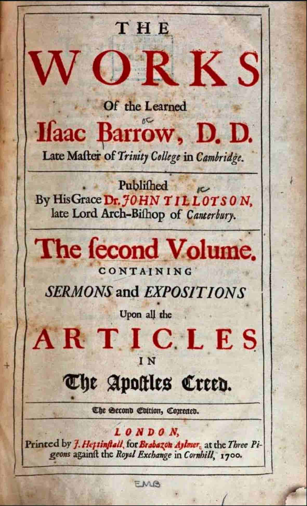
As for the ladies, I have nought to say,
A wanderer from the British world of fashion,
Where I, like other 'dogs, have had my day',
Like other men too, may have had my passion,
But that, like other things, has passed away,
And all her fools whom I could lay the lash on,
Foes, friends, men, women, now are nought to me
But dreams of what has been, no more to be.
Return we to Don Juan. He begun
To hear new words and to repeat them; but
Some feelings, universal as the sun,
Were such as could not in his breast be shut
More than within the bosom of a nun.
He was in love, as you would be no doubt,
With a young benefactress; so was she,
Just in the way we very often see.
And every day by daybreak, rather early
For Juan, who was somewhat fond of rest,
She came into the cave, but it was merely
To see her bird reposing in his nest.
And she would softly stir his locks so curly,
Without disturbing her yet slumbering guest,
Breathing all gently o'er his cheek and mouth,
As o'er a bed of roses the sweet south.
And every morn his colour freshlier came,
And every day helped on his convalescence.
'Twas well, because health in the human frame
Is pleasant, besides being true love's essence,
For health and idleness to passion's flame
Are oil and gunpowder; and some good lessons
Are also learnt from Ceres and from Bacchus,
Without whom Venus will not long attack us.
While Venus fills the heart (without heart really
Love, though good always, is not quite so good),
Ceres presents a plate of vermicelli
(For love must be sustained like flesh and blood),
While Bacchus pours out wine or hands a jelly.
Eggs, oysters too, are amatory food,
But who is their purveyor from above
Heaven knows; it may be Neptune, Pan, or Jove.
When Juan woke he found some good things ready,
A bath, a breakfast, and the finest eyes
That ever made a youthful heart less steady,
Besides her maid's, as pretty for their size;
But I have spoken of all this already,
And repetition's tiresome and unwise.
Well, Juan, after bathing in the sea,
Came always back to coffee and Haidée.
Both were so young and one so innocent
That bathing passed for nothing. Juan seemed
To her, as'twere, the kind of being sent,
Of whom these two years she had nightly dreamed,
A something to be loved, a creature meant
To be her happiness, and whom she deemed
To render happy. All who joy would win
Must share it; Happiness was born a twin.
It was such pleasure to behold him, such
Enlargement of existence to partake
Nature with him, to thrill beneath his touch,
To watch him slumbering and to see him wake.
To live with him forever were too much,
But then the thought of parting made her quake.
He was her own, her ocean-treasure, cast
Like a rich wreck, her first love and her last.
And thus a moon rolled on, and fair Haidée
Paid daily visits to her boy and took
Such plentiful precautions that still he
Remained unknown within his craggy nook.
At last her father's prows put out to sea,
For certain merchantmen upon the look,
Not as of yore to carry off an Io,
But three Ragusan vessels bound for Scio.
Then came her freedom, for she had no mother,
So that, her father being at sea, she was
Free as a married woman, or such other
Female, as where she likes may freely pass,
Without even the encumbrance of a brother,
The freest she that ever gazed on glass.
I speak of Christian lands in this comparison,
Where wives, at least, are seldom kept in garrison.
Now she prolonged her visits and her talk
(For they must talk), and he had learnt to say
So much as to propose to take a walk,
For little had he wandered since the day
On which, like a young flower snapped from the stalk,
Drooping and dewy on the beach he lay,
And thus they walked out in the afternoon
And saw the sun set opposite the moon.
It was a wild and breaker-beaten coast,
With cliffs above and a broad sandy shore,
Guarded by shoals and rocks as by an host,
With here and there a creek, whose aspect wore
A better welcome to the tempest-tost.
And rarely ceased the haughty billow's roar,
Save on the dead long summer days, which make
The outstretched ocean glitter like a lake.
And the small ripple spilt upon the beach
Scarcely o'erpassed the cream of your champagne,
When o'er the brim the sparkling bumpers reach,
That spring-dew of the spirit, the heart's rain!
Few things surpass old wine; and they may preach
Who please—the more because they preach in vain.
Let us have wine and woman, mirth and laughter,
Sermons and soda water the day after.
Man being reasonable must get drunk;
The best of life is but intoxication.
Glory, the grape, love, gold, in these are sunk
The hopes of all men and of every nation;
Without their sap, how branchless were the trunk
Of life's strange tree, so fruitful on occasion.
But to return. Get very drunk, and when
You wake with headache, you shall see what then.
Ring for your valet, bid him quickly bring
Some hock and soda water. Then you'll know
A pleasure worthy Xerxes, the great king;
For not the blest sherbet, sublimed with snow,
Nor the first sparkle of the desert spring,
Nor Burgundy in all its sunset glow,
After long travel, ennui, love, or slaughter,
Vie with that draught of hock and soda water.
The coast—I think it was the coast that I
Was just describing—yes, it was the coast -
Lay at this period quiet as the sky,
The sands untumbled, the blue waves untost,
And all was stillness, save the sea bird's cry
And dolphin's leap and little billow crost
By some low rock or shelve, that made it fret
Against the boundary it scarcely wet.
And forth they wandered, her sire being gone,
As I have said, upon an expedition.
And mother, brother, guardian, she had none,
Save Zoe, who although with due precision
She waited on her lady with the sun,
Thought daily service was her only mission,
Bringing warm water, wreathing her long tresses,
And asking now and then for cast-off dresses.
It was the cooling hour, just when the rounded
Red sun sinks down behind the azure hill,
Which then seems as if the whole earth it bounded,
Circling all nature, hushed and dim and still,
With the far mountain-crescent half surrounded
On one side, and the deep sea calm and chill
Upon the other, and the rosy sky
With one star sparkling through it like an eye.
And thus they wandered forth, and hand in hand,
Over the shining pebbles and the shells,
Glided along the smooth and hardened sand,
And in the worn and wild receptacles
Worked by the storms, yet worked as it were planned,
In hollow halls with sparry roofs and cells,
They turned to rest, and each clasped by an arm,
Yielded to the deep twilight's purple charm.
They looked up to the sky, whose floating glow
Spread like a rosy ocean, vast and bright.
They gazed upon the glittering sea below,
Whence the broad moon rose circling into sight.
They heard the wave's splash and the wind so low,
And saw each other's dark eyes darting light
Into each other, and beholding this,
Their lips drew near and clung into a kiss,
A long, long kiss, a kiss of youth and love
And beauty, all concentrating like rays
Into one focus, kindled from above;
Such kisses as belong to early days,
Where heart and soul and sense in concert move,
And the blood's lava, and the pulse a blaze,
Each kiss a heart-quake, for a kiss's strength,
I think, it must be reckoned by its length.
By length I mean duration; theirs endured
Heaven knows how long; no doubt they never reckoned,
And if they had, they could not have secured
The sum of their sensations to a second.
They had not spoken, but they felt allured,
As if their souls and lips each other beckoned,
Which, being joined, like swarming bees they clung,
Their hearts the flowers from whence the honey sprung.
They were alone, but not alone as they
Who shut in chambers think it loneliness.
The silent ocean and the starlight bay,
The twilight glow, which momently grew less,
The voiceless sands and dropping caves, that lay
Around them, made them to each other press,
As if there were no life beneath the sky
Save theirs, and that their life could never die.
They feared no eyes nor ears on that lone beach,
They felt no terrors from the night, they were
All in all to each other. Though their speech
Was broken words, they thought a language there,
And all the burning tongues the passions teach
Found in one sigh the best interpreter
Of nature's oracle, first love, that all
Which Eve has left her daughters since her fall.
Haidée spoke not of scruples, asked no vows
Nor offered any; she had never heard
Of plight and promises to be a spouse,
Or perils by a loving maid incurred.
She was all which pure ignorance allows
And flew to her young mate like a young bird,
And never having dreamt of falsehood, she
Had not one word to say of constancy.
She loved and was beloved, she adored
And she was worshipped after nature's fashion.
Their intense souls, into each other poured,
If souls could die, had perished in that passion,
But by degrees their senses were restored,
Again to be o'ercome, again to dash on.
And beating' gainst his bosom, Haidée's heart
Felt as if never more to beat apart.
Alas, they were so young, so beautiful,
So lonely, loving, helpless, and the hour
Was that in which the heart is always full,
And having o'er itself no further power,
Prompts deeds eternity cannot annul,
But pays off moments in an endless shower
Of hell-fire, all prepared for people giving
Pleasure or pain to one another living.
Alas for Juan and Haidée! They were
So loving and so lovely; till then never,
Excepting our first parents, such a pair
Had run the risk of being damned forever.
And Haidée, being devout as well as fair,
Had doubtless heard about the Stygian river
And hell and purgatory, but forgot
Just in the very crisis she should not.
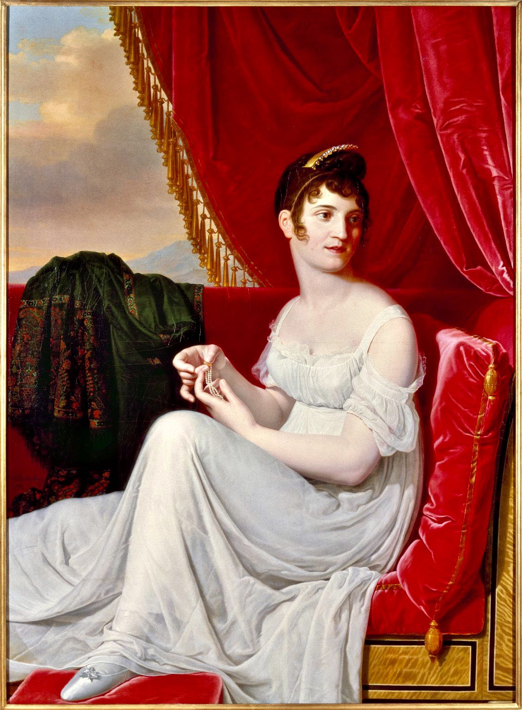
They look upon each other, and their eyes
Gleam in the moonlight, and her white arm clasps
Round Juan's head, and his around hers lies
Half buried in the tresses which it grasps.
She sits upon his knee and drinks his sighs,
He hers, until they end in broken gasps;
And thus they form a group that's quite antique,
Half naked, loving, natural, and Greek.
And when those deep and burning moments passed,
And Juan sunk to sleep within her arms,
She slept not, but all tenderly, though fast,
Sustained his head upon her bosom's charms.
And now and then her eye to heaven is cast,
And then on the pale cheek her breast now warms,
Pillowed on her o'erflowing heart, which pants
With all it granted and with all it grants.
An infant when it gazes on a light,
A child the moment when it drains the breast,
A devotee when soars the Host in sight,
An Arab with a stranger for a guest,
A sailor when the prize has struck in fight,
A miser filling his most hoarded chest
Feel rapture, but not such true joy are reaping
As they who watch o'er what they love while sleeping.
For there it lies so tranquil, so beloved;
All that it hath of life with us is living,
So gentle, stirless, helpless, and unmoved,
And all unconscious of the joy'tis giving.
All it hath felt, inflicted, passed, and proved,
Hushed into depths beyond the watcher's diving,
There lies the thing we love with all its errors
And all its charms, like death without its terrors.
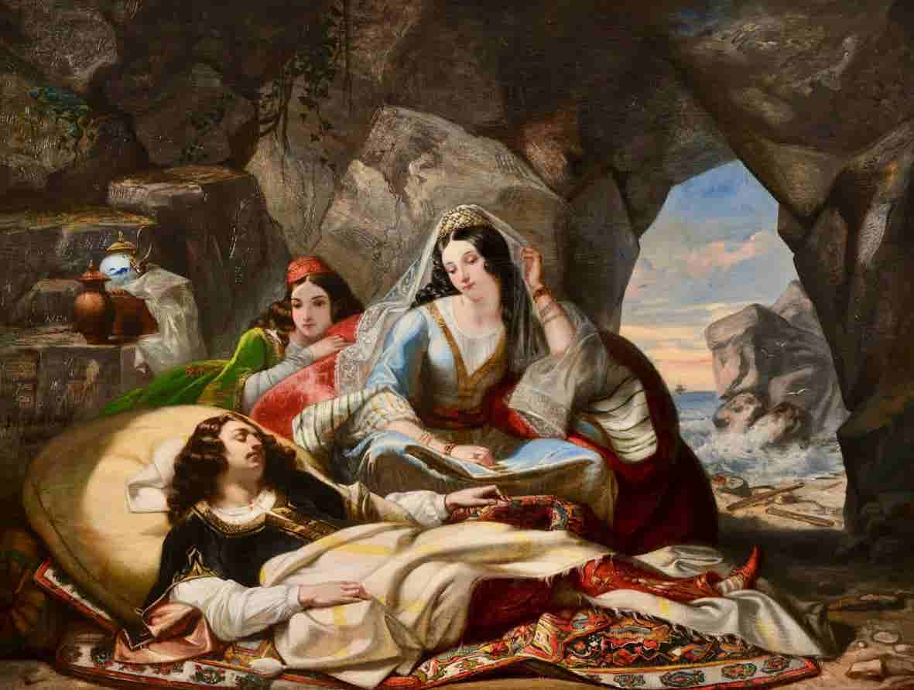
The lady watched her lover; and that hour
Of love's and night's and ocean's solitude
O'erflowed her soul with their united power.
Amidst the barren sand and rocks so rude
She and her wave-worn love had made their bower,
Where nought upon their passion could intrude,
And all the stars that crowded the blue space
Saw nothing happier than her glowing face.
Alas, the love of women! It is known
To be a lovely and a fearful thing,
For all of theirs upon that die is thrown,
And if `tis lost, life hath no more to bring
To them but mockeries of the past alone,
And their revenge is as the tiger's spring,
Deadly and quick and crushing; yet as real
Torture is theirs, what they inflict they feel.
They are right, for man, to man so oft unjust,
Is always so to women. One sole bond
Awaits them, treachery is all their trust.
Taught to conceal, their bursting hearts despond
Over their idol, till some wealthier lust
Buys them in marriage—and what rests beyond?
A thankless husband, next a faithless lover,
Then dressing, nursing, praying, and all's over.
Some take a lover, some take drams or prayers,
Some mind their household, others dissipation,
Some run away and but exchange their cares,
Losing the advantage of a virtuous station.
Few changes e'er can better their affairs,
Theirs being an unnatural situation,
From the dull palace to the dirty hovel.
Some play the devil, and then write a novel.
Haidée was Nature's bride and knew not this;
Haidée was Passion's child, born where the sun
Showers triple light and scorches even the kiss
Of his gazelle-eyed daughters. She was one
Made but to love, to feel that she was his
Who was her chosen. What was said or done
Elsewhere was nothing. She had nought to fear,
Hope, care, nor love beyond; her heart beat here.
And oh, that quickening of the heart, that beat!
How much it costs us! Yet each rising throb
Is in its cause as its effect so sweet
That Wisdom, ever on the watch to rob
Joy of its alchemy and to repeat
Fine truths—even Conscience too—has a tough job
To make us understand each good old maxim,
So good I wonder Castlereagh don't tax'em.
And now'twas done; on the lone shore were plighted
Their hearts. The stars, their nuptial torches, shed
Beauty upon the beautiful they lighted.
Ocean their witness, and the cave their bed,
By their own feelings hallowed and united;
Their priest was Solitude, and they were wed.
And they were happy, for to their young eyes
Each was an angel, and earth Paradise.
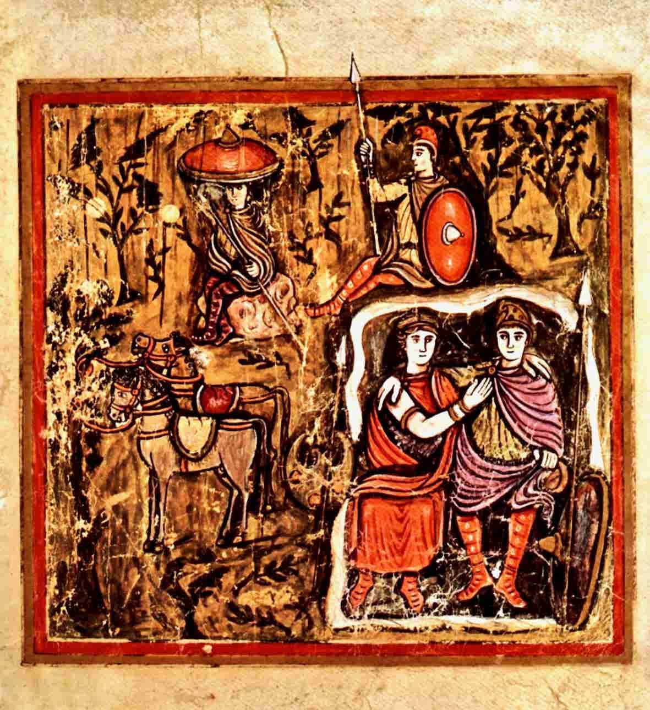
Oh Love
A favorite trick. B uses an apostrophe to Love (“Luurv”) many times in Don Juan to launch into a sarcastic aside apropos of nothing much. For example in St.88 of Canto I “Oh Love! in such as wilderness as this…", or again in St.106 “Oh Love! How perfect is thy mystic art…”, or in St.2 of Canto III, “Oh Love! What is it in this world of ours…” … and in a dozen more places until, finally, in St.5 of Canto XV he feigns exhaustion: “And as for love — O love! — We will proceed.” PC notes that stanzas 205-207 were drafted on the back of a theatre program from Venice or Ravenna, but it is not clear what the drama was (B. doesn’t seem to have been paying attention, in any case)
Oh Love, of whom great C sar was the suitor,
Titus the master, Antony the slave,
Horace, Catullus, scholars, Ovid tutor,
Sappho the sage bluestocking, in whose grave
All those may leap who rather would be neuter
(Leucadia's rock still overlooks the wave) -
Oh Love, thou art the very god of evil,
For after all, we cannot call thee devil.
Thou mak'st the chaste connubial state precarious
And jestest with the brows of mightiest men.
Cæsar and Pompey, Mahomet, Belisarius
Have much employed the Muse of history's pen.
Their lives and fortunes were extremely various;
Such worthies Time will never see again.
Yet to these four in three things the same luck holds;
They all were heroes, conquerors, and cuckolds.
Thou mak'st philosophers; there's Epicurus
And Aristippus, a material crew,
Who to immoral courses would allure us
By theories quite practicable too.
If only from the devil they would insure us,
How pleasant were the maxim (not quite new),
'Eat, drink, and love, what can the rest avail us?'
So said the royal sage Sardanapalus.
But Juan, had he quite forgotten Julia?
And should he have forgotten her so soon?
I can't but say it seems to me most truly a
Perplexing question, but no doubt the moon
Does these things for us, and whenever newly a
Strong palpitation rises,'tis her boon,
Else how the devil is it that fresh features
Have such a charm for us poor human creatures?
I hate inconstancy; I loathe, detest,
Abhor, condemn, abjure the mortal made
Of such quicksilver clay that in his breast
No permanent foundation can be laid.
Love, constant love, has been my constant guest,
And yet last night, being at a masquerade,
I saw the prettiest creature, fresh from Milan,
Which gave me some sensations like a villain.
Omitted verses…
The fair copy of Canto II in Teresa Guiccicoli’s hand contains two verses intended, probably, to appear at this point that were not included in Byron’s own fair copy or, therefore, in the final print.
“Unless Philosophy can make a Juliet!” But
This is not the death that it should die –
For when the turbid Passions are unruly, it
No doubt can soothe them with a lullaby –
Last night I had another proof how truly it
Can calm, for what it “made” me on that same
Night was a “Juliet” even to the name. –
The real name of this fair Veronese,
O’er whose sad tale Love echoes still, Alas! –
And Youth still weeps the tender tears that please
Another Juliet – whom I would not pass,
Her tale is told with so much simple ease -
Is Rousseau’s Julietta; I ne’er knew
One of the name but that I loved her too.
But soon Philosophy came to my aid
And whispered, 'Think of every sacred tie!'
'I will, my dear Philosophy,' I said,
'But then her teeth, and then oh heaven, her eye!
I'll just inquire if she be wife or maid
Or neither—out of curiosity.'
'Stop!' cried Philosophy with air so Grecian
(Though she was masked then as a fair Venetian).
'Stop!' So I stopped. But to return. That which
Men call inconstancy is nothing more
Than admiration due where Nature's rich
Profusion with young beauty covers o'er
Some favoured object; and as in the niche
A lovely statue we almost adore,
This sort of adoration of the real
Is but a heightening of the beau ideal.
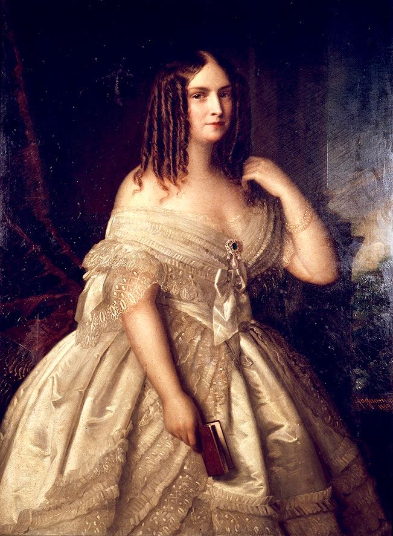
'Tis the perception of the beautiful,
A fine extension of the faculties,
Platonic, universal, wonderful,
Drawn from the stars and filtered through the skies,
Without which life would be extremely dull.
In short it is the use of our own eyes,
With one or two small senses added, just
To hint that flesh is formed of fiery dust.
Yet 'tis a painful feeling, and unwilling,
For surely if we always could perceive
In the same object graces quite as killing
As when she rose upon us like an Eve,
'Twould save us many a heartache, many a shilling
(For we must get them anyhow or grieve),
Whereas if one sole lady pleased forever,
How pleasant for the heart, as well as liver!
The heart is like the sky, a part of heaven,
But changes night and day too, like the sky.
Now o'er it clouds and thunder must be driven,
And darkness and destruction as on high,
But when it hath been scorched and pierced and riven,
Its storms expire in water drops. The eye
Pours forth at last the heart's blood turned to tears,
Which make the English climate of our years.
The liver is the lazaret of bile,
But very rarely executes its function,
For the first passion stays there such a while
That all the rest creep in and form a junction,
Like knots of vipers on a dunghill's soil -
Rage, fear, hate, jealousy, revenge, compunction -
So that all mischiefs spring up from this entrail,
Like earthquakes from the hidden fire called 'central'.
In the meantime, without proceeding more
In this anatomy, I've finished now
Two hundred and odd stanzas as before,
That being about the number I'll allow
Each canto of the twelve or twenty-four;
And laying down my pen, I make my bow,
Leaving Don Juan and Haidée to plead
For them and theirs with all who deign to read.